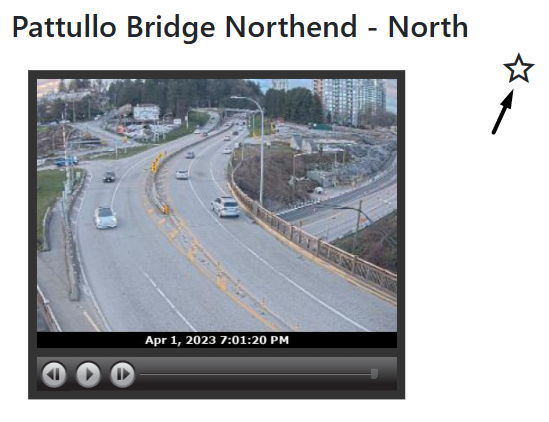

Go to Route List at the top of the page. Then, find the route that you would like to add to your Favourites. Click on View Live Cam. On the route details page,
click the star in the top right corner. The route has now been added to your Favourites.
